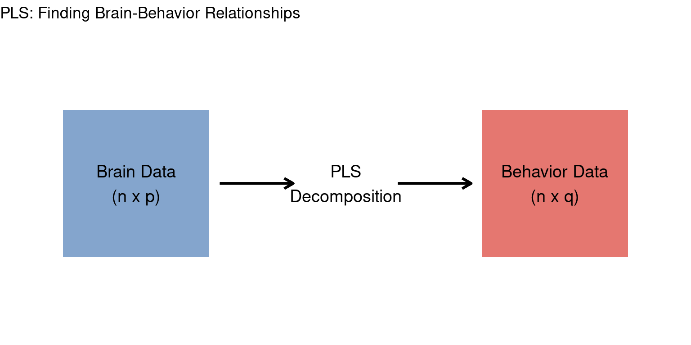

# Install dependencies
install.packages(c("ggplot2", "patchwork", "missRanger"))
# Load the plscmd package (from local source)
# Each lesson uses setup.R which sources all package files:
source("setup.R")
# Alternative: Install as package
# devtools::install_local("..")plscmd: Partial Least Squares Analysis in R
A Moderate/Advanced Course
Welcome
This course provides a comprehensive introduction to Partial Least Squares (PLS) analysis using the plscmd R package. The course is designed for researchers with some R experience who want to understand both the theory and practical implementation of PLS for brain-behavior analyses.
Course Overview
| Lesson | Topic | Description |
|---|---|---|
| 1 | Introduction to PLS | Core concepts, data structures, and your first analysis |
| 2 | Understanding Results | Interpreting singular values, permutation tests, and bootstrap ratios |
| 3 | Visualization | Creating publication-ready figures |
| 4 | Missing Data | Imputation strategies and multiple imputation |
| 5 | Advanced Topics | Robust methods, internals, and real-world workflows |
Prerequisites
- R knowledge: Comfortable with data frames, matrices, and basic plotting
- Statistics: Understanding of correlation, regression, and resampling methods
- Domain: Familiarity with neuroimaging or similar multivariate data is helpful
Setup
Before starting, install the required packages:
What is PLS?
Partial Least Squares (PLS) is a multivariate technique that identifies relationships between two sets of variables. In neuroimaging:
- Brain matrix: Voxels, ROIs, or connectivity measures (columns) x subjects (rows)
- Behavior matrix: Cognitive scores, demographics, clinical measures (columns) x subjects (rows)
PLS finds latent variables (LVs) that maximize the covariance between brain and behavior patterns.

Key Concepts
- Latent Variables (LVs): Weighted combinations of original variables that capture shared variance
- Saliences: Weights showing how much each variable contributes to an LV
- Singular Values: Strength of the relationship captured by each LV
- Permutation Testing: Non-parametric significance testing
- Bootstrap Ratios: Reliability of saliences (similar to z-scores)
Let’s begin with Lesson 1: Introduction to PLS.